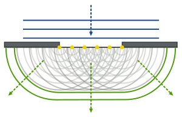

Ray and Wave-based Methods
Rays
When shapes are simple, the patterns created by rays (and therefore the light patterns) can be simply predicted using the location of the ray's sources, and considering the reflected intensity and angle. This can be done using ray tracers. However, this is only truly accurate for completely flat, infinite surfaces, so therefore works well for shapes such as enclosed rectangles, but when gaps or texture are introduced this becomes more tricky.
Using ray tracers in this way completely ignores the effects of diffraction, and must be combined with other methods in order to take them into account. A way of adding a simplified version of diffraction is to use the Huygens-Fresnel Principle. The principle states: a light wave can be represented by an infinite number of hemispherical light sources lined up along its wavefront.
